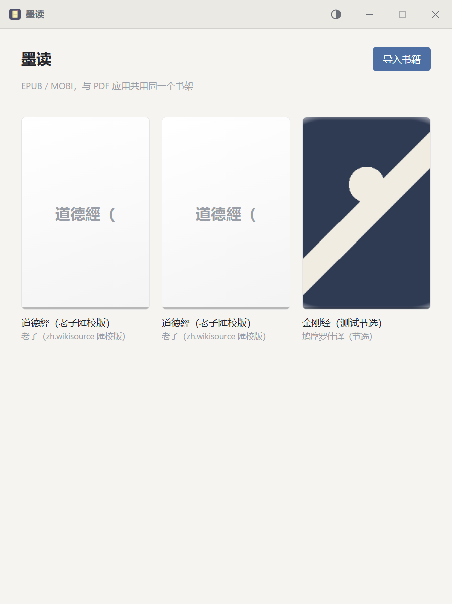
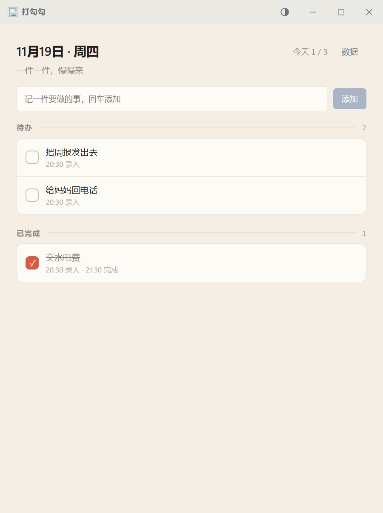
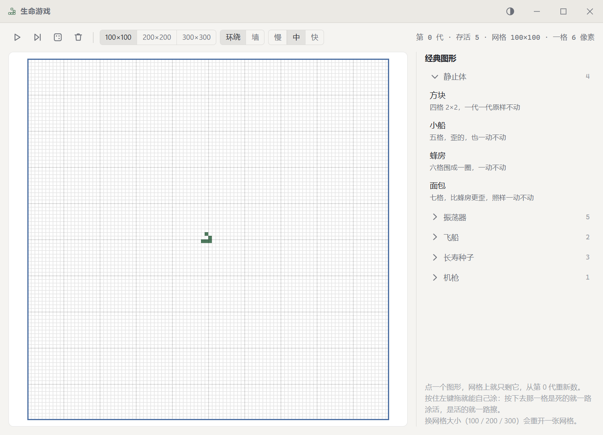
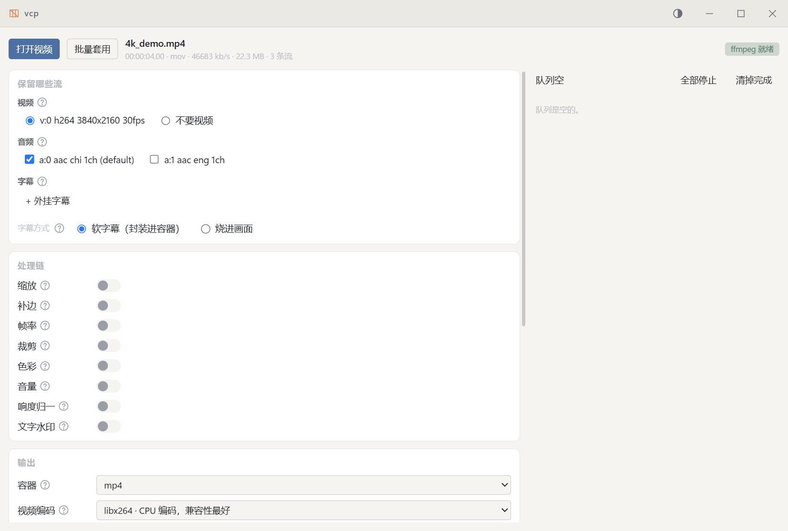
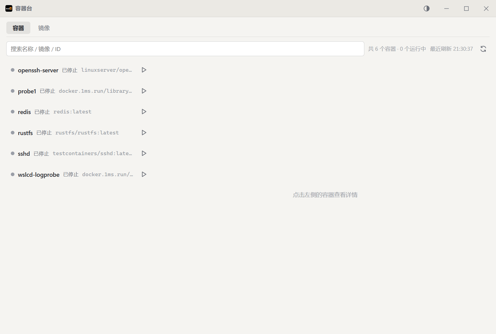
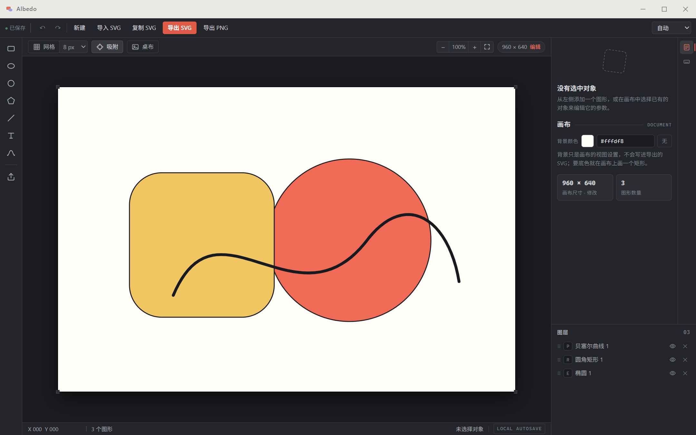
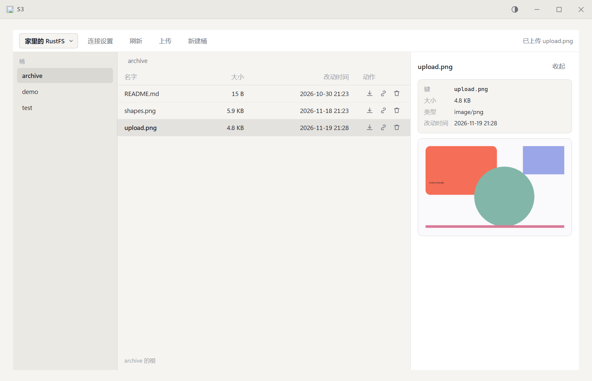

Reader airship-reader
EPUB / MOBI 电子书书架与阅读器。
这些是仓库里天天在用的工具（应用 id 统一带 airship- 前缀），每一个都是一个独立的 <id>.airship 包，跟外部写的应用走同一条路：
just app-installer <id> 出它自己的安装器，装进每用户目录，桌面与开始菜单各留一枚快捷方式。
下面每张卡是它自己窗口的实拍（just shot 抓的），清单照 src/apps/<id>/app.ts 原样念——
文件边界是 grants 的路径表：数据目录外只认本次会话里对话框显式选中的路径，越界 runtime 一律拒绝。

EPUB / MOBI 电子书书架与阅读器。

每天要做的事，勾掉就行。

在 100 / 200 / 300 的网格上跑康威生命游戏，经典图形随手放，格子自己画。

FFmpeg 编排台：选流、加处理链、看命令、跑队列。

WSL 容器与镜像的图形外壳：看列表、起停删、读日志、编排 run 命令。

SVG 编辑工作台：形状与路径命令栈、布尔运算、对齐吸附、桌布描图、导出 SVG/PNG。

连着 S3 兼容的对象存储看桶与对象：浏览、上传、下载、预览、删除、复制临时链接。
给一份 SVG，出符合 docs/apps/icons.md 的 icon.png 与 7 帧 icon.ico。
just new-app hello 你好 从 templates/app 造出 src/apps/hello/，
改清单、样式、规格册三处，just build-apps 产包，just app-installer hello 产安装器——
runtime 侧一个文件都不用动。怎么做在文档 · 加一个应用。